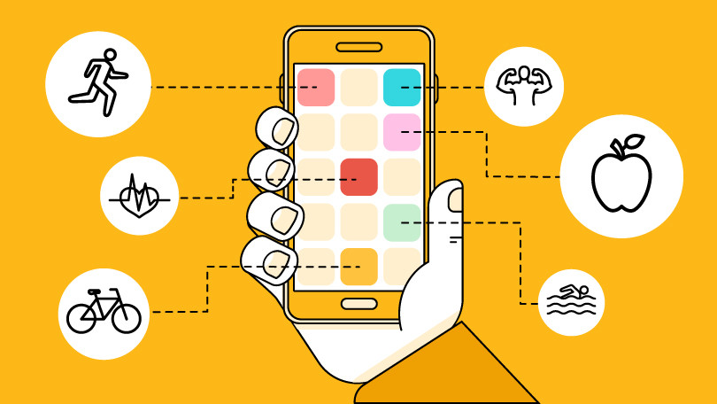

Beste student,
Jij start deze periode met een cursus Krachttraining! Graag vragen we je aandacht voor een onderzoek naar de impact van sport apps. Dit onderzoek wordt uitgevoerd door de Radboud Universiteit in samenwerking met het Radboud Sportcentrum (RSC). Het onderzoek is onderdeel van het grote onderzoeksproject TRansition Into Active Living (TRIAL).
Het moeilijkste aan sport is gemotiveerd blijven. Gelukkig zijn er apps die je doorzettingsvermogen helpen stimuleren. Maar werken deze apps echt, en waarom? De Radboud Universiteit wil deze vragen beantwoorden. Deze kennis helpt het Radboud Sportcentrum en andere organisaties om duurzame sportdeelname te promoten.

Neem je deel aan ons onderzoek?
We willen je vragen om gedurende de cursus Krachttraining jouw sportactiviteiten bij te houden in een sport app. Daarnaast vragen we je bepaalde challenges/opdrachten te voltooien met de app. Voordat je begint, vul je een online vragenlijst in, waarin we je een aantal vragen stellen over jouw sport motivaties. Na de cursus willen we je nogmaals vragen om een korte vragenlijst in te vullen, over hoe jij het gebruik van de app ervaren hebt.
Klik de link hieronder om te starten met de eerste vragenlijst.
Deelname is volledig vrijwillig, maar het is van belang dat zo veel mogelijk studenten meedoen. Om je te bedanken voor je deelname, krijg je:
Bekijk het informatieformulier voor meer informatie over het onderzoek, alsmede de voorwaarden.
Benieuwd naar de uiteindelijke resultaten? Na afloop van het onderzoek delen we de resultaten op deze website, en op het Open Science Framework (OSF).